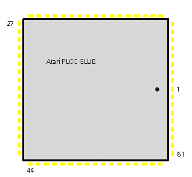

|
|
8.1.7 GLUE
Atari Custom GLUE Chip
ST Serie GLUE Chip 68 Pin PLCC
Pin Signal Typ Beschreibung _______________________________________________________________________________ 1 Vcc Input +5 Volt Versorgungsspannung 2-9 A14-A21 I/O Adressleitungen 10-11 A22,A23 I/O Adressleitungen 12 AS- 13-15 FC2-FC0 16 VMA- 17-21 ROM4-ROM0- I/O Romselekt Leitungen 22 RESET- 23 RAM- 24 DMA- 25 DEV- 26 FCS- 27 BGI- 28 RDI- 29 UPA- 30 BERR- 31 DTACK- 32 IPL1- 33 IPL2- 34 CLK Input 8Mhz Takt für GLUE 35,52 GND Masse, GND 36 BLANK- 37 HSYNC Output H-Sync. für Video 38 VSYNC Output V-Sync. für Video 39 DE 40 BR- 41 BGACK- 42 6850CS Output Chipselekt 6850 43 500KHZ Output 500Khz Takt Out 44 MFPINT- 45 BGO- 46 LDS- 47 UDS- 48,49 D0,D1 I/O Datenleitungen 50 IACK- 51 MFPCS- Output Chipselekt MFP 53 SNDCS- Output Chipselekt Soundchip 54 2MHZ Output 2Mhz Takt Output 55 R/W- I/O High = lesen, Low = schreiben 56-68 A1-A13 I/O Adressleitungen _______________________________________________________________________________
 Abbildung 1 - Atari PLCC GLUE
Custom Chips (c) Atari Corp.
|
|
|